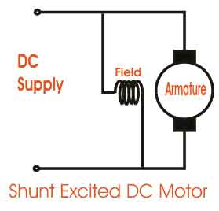
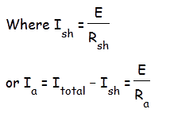
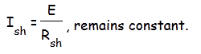
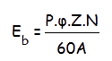
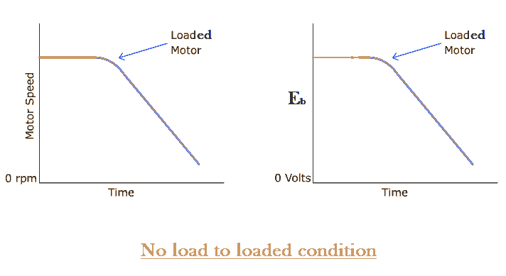
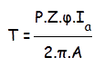
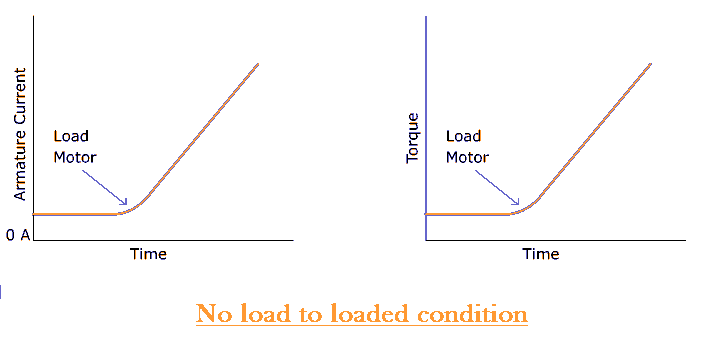
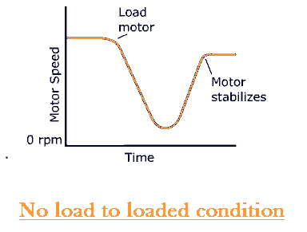

The shunt wound dc motor falls under the category of self excited dc motors, where the field windings are shunted to, or are connected in parallel to the armature winding of the motor, as its name is suggestive of. And for this reason both the armature winding and the field winding are exposed to the same supply voltage, though there are separate branches for the flow of armature electric current and the field electric current as shown in the figure of dc shunt motor below.

Voltage and Current Equation of a Shunt Wound DC Motor
Let us now consider the voltage and electric current being supplied from the electrical terminal to the motor be given by E and Itotal respectively. This supply electric current in case of the shunt wound dc motor is split up into 2 parts. Ia, flowing through the armature winding of resistance Ra and Ish flowing through the field winding of resistance Rsh. The voltage across both windings remains the same.
From there we can write Itotal = Ia + Ish

Thus we put this value of armature electric current Ia to get general voltage equation of a dc shunt motor.
Now in general practice, when the motor is in its running condition, and supply voltage is constant the shunt field electric current given by,

But we know Ish ∝ Φ
i.e. field flux Φ is proportional to filed electric current Ish
Thus the field flux remains more or less constant and for this reason a shunt wound dc motor is called a constant flux motor.
Construction of a Shunt Wound DC Motor
Essential Parts of DC Machine
Just that there is one distinguishable feature in its designing which can be explained by taking into consideration, the torque generated by the motor. To produce a high torque,
i) The armature winding must be exposed to an amount of electric current that’s much higher than the field windings current, as the torque is proportional to the armature current.
ii) The field winding must be wound with many turns to increase the flux linkage, as flux linkage between the field and armature winding is also proportional to the torque.
Keeping these two above mentioned criterion in mind a dc shunt motor has been designed in a way, that the field winding possess much higher number of turns to increase net flux linkage and are lesser in diameter of conductor to increase resistance(reduce electric current flow) compared to the armature winding of the dc motor. And this is how a shunt wound dc motor is visibly distinguishable in static condition from the dc series motor (having thicker field coils) of the self excited type motor’s category.
Self-Speed Regulation of a Shunt Wound DC Motor
A very important and interesting fact about the dc shunt motor, is in its ability to self regulate its speed on application of load to the shaft of the rotor terminals. This essentially means that on switching the motor running condition from no load to loaded, surprisingly there is no considerable change in speed of running, as would be expected in the absence of any speed regulating modifications from outside. Let us see how?
Let us do a step-wise analysis to understand it better.
1) Initially considering the motor to be running under no load or lightly loaded condition at a speed of N rpm.
2) On adding a load to the shaft, the motor does slow down initially, but this is where the concept of self regulation comes into the picture.
3) At the very onset of load introduction to a shunt wound dc motor, the speed definitely reduces, and along with speed also reduces the back emf, Eb. Since Eb ∝ N, given by,

This can be graphically explained below.

4) This reduction in the counter emf or the back emf Eb results in the increase of the net voltage. As net voltage Enet = E − Eb. Since supply voltage E remains constant.
5) As a result of this increased amount of net voltage, the armature electric current increases and consequently the torque increases.
Since, Ia ∝ Τ given by

The change in armature electric current and torque on supplying load is graphically shown below.

6) This increase in the amount of torque increases the speed and thus compensating for the speed loss on loading. Thus the final speed characteristic of a dc shunt motor, looks like.

From there we can well understand this special ability of the shunt wound dc motor to regulate its speed by itself on loading and thus its rightly called the constant flux or constant speed motor. Because of which it finds wide spread industrial application where ever constant speed operation is required.
 by
by